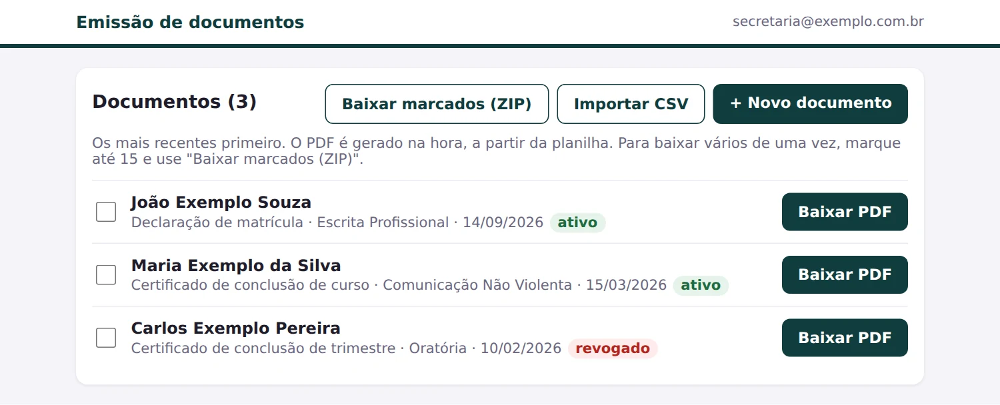

Certificados e declarações que qualquer pessoa confere pelo QR code.
Emissão de documentos em PDF a partir de uma planilha do Google, com um ID aleatório e um QR code em cada um. O QR abre uma página pública que confirma se o documento existe e se continua válido, sem mostrar CPF, RG ou endereço.
Fui o responsável pelo projeto, da especificação às duas implementações. Usei IA como ferramenta de desenvolvimento e também nos testes.
Da linha da planilha à página de validação.

Documentos conferidos por quem não tem acesso aos dados da escola.
A escola precisava emitir certificados e declarações e permitir que quem os recebe confira se são válidos. A conferência tinha de funcionar para qualquer pessoa, sem expor os dados pessoais dos alunos e dentro das restrições do ambiente da escola.
Terceiros, com rigor
Parte dos alunos estuda por meio de empresas clientes, que acompanham os certificados e declarações entregues aos seus funcionários. Quem recebe precisa saber se o documento existe e se continua válido.
Dados pessoais das declarações
As declarações levam CPF, RG e endereço. A consulta pública precisa confirmar o documento sem mostrar nenhum desses dados.
No ambiente de quem emite
Com as restrições desse ambiente: hospedagem que pode não executar Python e uma política do Google Workspace que bloqueia chaves de conta de serviço, mantida em vez de desativada.
Contexto: implementação técnica de um projeto real, feito para uma escola de cursos livres. A escola não é identificada, e escola, alunos, cursos e documentos desta página são fictícios. Não é um produto nem um serviço oferecido.
Siga um documento do registro até a validação.
Escolha uma linha da planilha e avance pelas etapas. Os PDFs e os QR codes foram gerados pelo código do projeto, com dados fictícios; a planilha e as telas são reproduções, sem servidor por trás.
Uma especificação, dois ambientes.
Uma única especificação define as regras: colunas da planilha, tipos de documento, formato do ID, campos públicos, revogação e o link do LinkedIn. Ela tem duas implementações, que não são produtos diferentes: são o mesmo contrato rodando em ambientes diferentes. Onde dá para hospedar um contêiner, a referência é a versão Python; onde não dá, ou a equipe já opera n8n, os fluxos cobrem as mesmas regras.
O custo dessa escolha é explícito: toda regra nova entra primeiro na especificação e depois nas duas implementações.
Python
serviço num contêiner
- situação
- Pronta.
- stack
- Flask, ReportLab, gspread, Docker
- Desenhado em código; a fonte diminui para caber nomes e conteúdos longos
- emissão
- Senha, com bloqueio temporário após tentativas erradas
- validação
- 10 consultas por minuto por visitante; planilha em cache por 30 s
- testes
- 144 automatizados, incluindo o fluxo registro → PDF → QR → página
n8n
fluxos, sem hospedar código
- situação
- Validação pronta. Emissão testada até a geração do PDF, que depende da configuração do Google no ambiente
- stack
- n8n, Google Sheets, Google Slides
- Modelo no Google Slides preenchido pelo fluxo, com tamanho de fonte fixo
- emissão
- Login com a conta Google, liberado só para e-mails ou domínios autorizados
- cadastro
- Formulário, importação de CSV ou direto na planilha; vários PDFs num ZIP
- testes
- Validação manual dos fluxos

O que foi decidido e o que cada escolha custou.
A planilha é o registro; sem banco próprio
O emissor mantém as linhas; a validação só lê.
Revogar é mudar o status. Cada leitura custa chamadas à API do Google, com cota baixa: a versão Python guarda a planilha em cache por 30 s na rota pública.
PDF gerado sob demanda, nunca armazenado
O documento sai sempre do estado atual da planilha.
Não há cópia do que foi entregue antes. Reemitir gera o PDF de novo, a partir da linha.
A validação mostra só os campos públicos
CPF, RG, endereço e dia de aula ficam só na emissão.
O PDF das declarações nunca é servido pela página pública.
ID de 12 letras ou dígitos, aleatório
Inviável descobrir documentos por tentativa (~71 bits). Sem - ou _: na planilha, um valor começando com - viraria fórmula.
O formato é conferido antes de qualquer consulta. É um identificador difícil de adivinhar, não uma prova de autenticidade.
Acesso ao Google sem chave persistente
A política que bloqueia chaves de conta de serviço foi mantida, não desativada.
Python usa a identidade do ambiente; n8n, o login OAuth da conta do emissor.
URL de validação vem da configuração
O QR e o link do LinkedIn não dependem do endereço da requisição.
Sem a URL configurada, a emissão falha em vez de gerar documento sem QR.
O que a consulta confirma, e o que ela não prova.
A página de validação é uma consulta ao registro do emissor. Ela não inspeciona o arquivo que a pessoa tem em mãos.
Confirma
- Que existe no registro do emissor um documento com aquele ID.
- O tipo, o nome, o curso, a carga horária e a data de emissão desse documento.
- Se ele está ativo ou revogado, conforme a leitura mais recente da planilha (até 30 s de cache no Python; sem cache no n8n).
Não prova
- Que o PDF não foi alterado depois de emitido: os documentos não têm assinatura digital nem hash. Quem confere compara os dados da página com os do documento.
- Os campos que a página não mostra, como CPF, RG, endereço, horário das aulas e conteúdo programático.
- A origem por si só: o QR é um atalho para a consulta, e a confiança depende de a página aberta ser do domínio do emissor.
Integridade do arquivo (assinatura digital ou hash), guarda dos PDFs emitidos, histórico de quem emitiu o quê e quando, e limite de consultas entre várias instâncias. São problemas diferentes, que pediriam outra arquitetura.